Будівничі Курганів
Коли слуги Володарів Каменю (Stone Lords; Володарі Каменю) повстали, убили своїх володарів і вивільнили Тих, Що Внизу (Things Below; Ті, Що Внизу), полеглих у тому повстанні вшанували як мучеників. Уцілілі насипали на їхню честь могили із землі й каменю — прості кургани, зведені людськими руками й людським умінням.
Лад суспільства розвалився. Край охопив жах.
До влади прийшли дрібні тирани й королі-чаклуни. Вони зводили кургани, щоб ушанувати вірних васалів або запечатати привидів тих, кого зрадили.
Скороминущі королівства здіймалися й падали. Правителі насипали величні кургани й веліли ховати себе там разом із багатствами, рабами й почтом. Живлені темною магією та силою Тих, Що Внизу, деякі з цих тиранів правили навіть після смерті.
З часом сила Тих, Що Внизу ослабла. Піддані повставали й скидали своїх володарів. Тирани почали падати.
Тих, кого не вдавалося вбити, запечатували в курганах. Настала теперішня доба Ті, Що Внизу.
Багато курганів збереглося й досі. Деякі — прості могили. Багато з них населені привидами чи прокляті.
Деякі ув'язнюють прадавнє зло. Вони розкидані по Краю Світу (World's End), особливо в Землях Уступів (Steplands; Землі Уступів). Народ Пагорбів (Hillfolk; Народ Пагорбів) уникає їх і застерігає всіх мандрівників. Бо вони походять від Будівничих Курганів — і від тих, хто їх скинув. Вони знають, які жахи ховають ці земляні насипи.
Імена
Бретонського чи корнського звучання, подібні до імен Народу Пагорбів Народ Пагорбів, але з більшою кількістю голосних: Алана, Арзель, Брандан, Корент, Деніель, Енора, Ґвенаель, Ерве, Жюдікаель, Каренза, Катель, Мабен, Марг, Нольвенн, Піран, Ронан, Вінок, Янік, Єзекаель.
Зачіпки
- Артефакт, якого прагнуть персонажі гравців, лежить у кургані, де блукають привиди
- Якийсь дурень розпечатує курган і випускає на волю примарних вершників Примарний вершник
- Хтось здобуває прив'язь безсмертного Безсмертні
- Народ Пагорбів лютує, бо один із курганів пограбовано
Теми
Обери 1 чи 2 або кинь .
| 1 | Революція: полювання на Володарів Каменю, повалення усталеного ладу |
|---|---|
| 2 | Творіння Творців: зруйновані, сплюндровані, пристосовані до іншого, втрачені |
| 3 | Занепад суспільства: голод, нестачі, накопичення запасів, насильство |
| 4 | Чаклуни й некроманти: безрозсудно орудують силою, якої не можуть приборкати |
| 5 | Людські жертвоприношення, магія крові, залицяння до Тих, Що Внизу, і відкрите поклоніння їм |
| 6 | Жахи війни: плюндрування, мародерство, різанина, вигнання з рідних місць |
| 7 | Біженці, зневірені й налякані, шукають безпеки, а вдовольняються виживанням |
| 8 | Королі-чаклуни й дрібні воєводи з їхніми величними, кривавими амбіціями |
| 9 | Завоювання/гноблення/поневолення |
| 10 | Інтриги/зрада/міжусобна війна |
| 11 | Правителі, що чіпляються за владу навіть із могили |
| 12 | Героїзм, надія й стійкість, повалення тиранів, убивство чудовиськ; кування нової доби |
Питання
- Де найближчий відомий тобі курган?
- Який дивний знак його позначає?
- Яку небилицю ти чув про нього?
- Яку історію ти пам'ятаєш про страшні дні після падіння Творців?
Перекази
Усі знають:
- Що край поцяткований старими курганами
- Що вони менші й грубіші за руїни Творців
- Що Народ Пагорбів їх уникає
- Що в них нібито ховаються і великі скарби, і велика небезпека
Дехто може знати:
- Де можна знайти кілька курганів
- Що їх звели (зневажені) предки Народу Пагорбів
- Про особливо славетну (чи ганебну) постать серед них
- Про жахи тих часів
- Переказ про певний курган
Мало хто знає:
- Що містить певний курган
- Де похована певна постать
- Справжню історію кургану
Локації
Локації Будівничих Курганів найчастіше трапляються в Землях Уступів Землі Уступів, особливо довкола Озера Чорноводдя (Blackwater Lake; Озеро Чорноводдя) та Озера Трьох Ковенів (Three Coven Lake; Озеро Трьох Ковенів). Чимало їх також на Рівнинах (Flats; Рівнини), у Південному Манмарху (South Manmarch; Південний Манмарх) і вздовж Моторошної Ріки (Dread River; Моторошна Ріка). Кілька можна знайти на Піках Гаффел (Huffel Peaks; Піки Гаффел) і навіть на півночі, у Передгір'ї (Foothills; Передгір'я).
Щоб створити локацію Будівничих Курганів, обери одну або попроси когось кинути Кістку Долі.
| 1 | Печера, у якій вони чи їхні жертви жили/ховалися/гинули/ були поховані (поєднай з 1 чи 2 темами, Теми) |
|---|---|
| 2 | Старе бойовище чи братська могила, найпевніше, з привидами |
| 3-4 | Відвойована руїна Творців (див. нижче) |
| 5-6 | Курган |
Відвойована руїна Творців
Обери чи визнач кидком її походження. Створи руїну за відповідними таблицями, кидаючи з перевагою на її стан на той час, коли Будівничі Курганів її захопили.
| 1 | Руїна Зелених Володарів |
|---|---|
| 2 | Руїна Володарів Інею |
| 3-4 | Руїна Володарів Бур |
| 5-6 | Руїна Володарів Горна |
| 7-10 | Руїна Володарів Каменю |
| 11-12 | Руїна кількох груп (кинь двічі) |
Тоді обери чи визнач кидком тему, що покаже, як Будівничі Курганів її використовували,
1-3 ознаки їхньої присутності та теперішній стан руїни. Насели локацію артефактами й небезпеками Будівничих Курганів, а також її первісних власників.
| 1-2 | Привиди/психічні відбитки |
|---|---|
| 3-4 | Рештки/кістки/могили/пам'ятні знаки |
| 5-6 | Руйнування/грабунок/вандалізм/написи на стінах |
| 7-8 | Особлива матеріальна культура: сміття/ кераміка/знаряддя/мистецтво/скульптура/тканини тощо |
| 9-10 | Грубі добудови/ переробки/латання під людський зріст |
| 11 | Вівтарі/ідоли/пожертви/таємні символи |
| 12 | Артефакти Творців, пристосовані до іншого |
| 1-4 | Розтрощена й сплюндрована часом, лихом чи вандалами; здебільшого засипана, заросла, обвалена; її призначення не розпізнати |
|---|---|
| 5-8 | Руйнується, здебільшого засипана, заросла чи прихована |
| 9-10 | Засипана, заросла чи прихована, але переважно ціла |
| 11-12 | Цілком на виду й дивовижно добре збережена |
Більше прикладів див. в Озері Чорноводдя Озеро Чорноводдя та Озері Трьох Ковенів Озеро Трьох Ковенів.
Персонажі гравців шукають вогняне серце Самоцвіту Розуму Самоцвіт Розуму. Гадаю, воно в руїні Володарів Каменю, яку відвоювали Будівничі Курганів. За таблицями на Володарі Каменю у мене виходить лабіринт багатоповерхових брутальних помешкань — житла для робітників, — збудованих довкола одного велетенського маєтку, де жили наглядачі. Може, це була плантація, і комплекс доглядала невелика армія кам'яних слуг Володарі Каменю?
На тему Будівничих Курганів я викидаю 11 («правителі, що чіпляються за владу навіть із могили»). На ознаки викидаю 5 («руйнування/грабунок/вандалізм/написи на стінах») і 10 («грубі… під людський зріст» переробки). На теперішній стан — 9 («засипана, заросла… переважно ціла»). Трохи поміркувавши, вигадую ось що:
Чаклун підняв тутешніх людей на повстання проти наглядачів. Тоді він забрав собі маєток разом із пристроєм, що заряджав кам'яних слуг і керував ними, — пристроєм, який живило серце Самоцвіту Розуму зі скла Творців! Він перетворив маєток на грубий палац і відіслав «своїх» людей назад працювати в полях. Коли вони зрештою повстали, його смертельно поранили, але він переселив свою душу в пристрій, що керував кам'яними слугами. Тепер, коли його розум розтікся по численних конструктах, він придушив повстання. Його правління ставало дедалі безладнішим, жорстокішим і безпліднішим. Житла ставали дедалі убогішими й безнадійнішими. Люди тікали. Чаклунові було байдуже.
Тепер комплекс стоїть порожній: зарослий, напівзасипаний, обдертий від усього цінного, і живуть у ньому лише дедалі менша армія кам'яних слуг та розщеплений розум параноїдального чаклуна.
Персонажі гравців ідуть уздовж ріки Срут від Маршеджа (Marshedge; Маршедж) через Південний Манмарх, коли натрапляють на курган. Я викидаю 10 на місцевість («дерево(а), савана, хащі»), 9 на тему («завоювання/гноблення/поневолення»), 12 на розмір («рукотворний пагорб»), 1 на призначення («вшанувати похованих»), 3 на архітектурні елементи («помітний вхід»), 11 на стан («дивовижно цілий, цілком на виду») і 12 на особливості («кинь двічі»). Тоді випадає 4 («осквернений Тими, Що Внизу») і 10 («скарби», і 2 на те, скільки їх лишилося). Для осквернення я гортаю на Ті, Що Внизу і вигадую отруйне місце з темами смерті й поламаних кісток, спричинене спершу кривавою жертвою, а потім зламаною печаттю. Трохи поміркувавши, вигадую ось що:
Самотній пагорб, що здіймається з рідкого лісу на південному березі ріки. Його замовила донька воєводи. Сотні рабів звели його. Коли роботу скінчили, вона звеліла розтрощити рабам черепи й поховати їх разом із батьком та його багатствами. Коли коротке правління доньки скінчилося, якісь дурні виламали кам'яні двері, щоб пограбувати гробницю воєводи. Вони знайшли покої, повні смерті, божевілля й проклятого золота. Ті небагато, хто вибрався, вже ніколи не були колишніми. Курган досі стоїть відчинений, і скарби досі там, але ніхто з крихтою глузду туди не ходить.
Це найочевидніші рештки тих кривавих часів: куполоподібні земляні насипи. Більшість людей гадає, що всі вони — гробниці, але це далеко не так.
Обери чи визнач кидком теми, розмір, призначення, 1 чи 2 архітектурні елементи, стан і особливість кургану. Помісти курган у місцевість, що пасує до його краю. Наповни його артефактами артефактами і небезпеками небезпеками Будівничих Курганів чи відповідного краю.
| 1-4 | Малий: лише кілька кроків завширшки, без жодних покоїв |
|---|---|
| 5-8 | Середній: завбільшки з хату, кілька тісних проходів/покоїв |
| 9-12 | Великий: рукотворний пагорб, пронизаний покоями/ходами |
| 1-3 | Вшанувати похованих |
|---|---|
| 4-6 | Зв'язати/мучити похованих |
| 7 | Захистити похованих |
| 8-9 | Сховати щось |
| 10 | Використовувати/підтримувати лиху магію |
| 11-12 | Кинь двічі |
| 1-2 | Мегаліт(и)/кам'яна(і) гірка(и)/дольмен(и) |
|---|---|
| 3-4 | Помітний вхід (найпевніше, запечатаний) |
| 5-6 | Неправильна/вигадлива/овальна форма |
| 7-8 | Перероблені творіння Творців |
| 9-10 | Стіни із сухої кладки |
| 11-12 | Збудований довкола джерела: вода б'є/збирається/витікає |
Навіть у великих курганах покої й ходи тісні й задушливі, часто з утрамбованою земляною долівкою та обкладені великими кам'яними плитами.
| 1-4 | Обвалений, розритий, лишилися тільки натяки |
|---|---|
| 5-6 | Частково обвалений чи розритий, але здебільшого цілий |
| 7-10 | Здебільшого цілий, але зарослий чи частково засипаний; легко проминути |
| 11-12 | Дивовижно цілий, цілком на виду |
| 1-2 | привидами, позначений деревами дул |
|---|---|
| 3-4 | Осквернений Тими, Що Внизу |
| 5 | Духи-охоронці/конструкт(и)/демон(и)/закляття/пастки |
| 6 | Сполучений із печерами |
| 7 | У ньому живуть місцеві звірі/розбійники |
| 8 | корисні чи цінні рослини |
| 9-10 | Скарби (кинь , щоб підказати, скільки їх лишилося) |
| 11-12 | Кинь ще раз, двічі |
Більше прикладів див. в Озері Чорноводдя Озеро Чорноводдя.
Артефакти
Будівничі Курганів охоче грабували й пристосовували до власних потреб будь-які скарби, які могли, і часто бавилися з небезпечними силами. У їхніх локаціях часто трапляються артефакти, пов'язані з:
- Смертю й невмирущими Смерть і Невмирущі
- Тими, Що Внизу Ті, Що Внизу
- Володарями Каменю Володарі Каменю
- Іншими Творцями (Makers; Творці), особливо Володарями Горна (Forge Lords; Володарі Горна) чи Володарями Бур (Tempest Lords; Володарі Бур)
 Різні скарби
Різні скарби
- Іржавий підвісок у формі літери Y (Цінність 0), символ культу, що годував Голос Вічної Пащі Ті, Що Внизу
- Бронзовий клинок із кінцівки металевого конструкта Володарі Горна, перероблений на брутальну сокиру (поруч, кривава, незручна, +1 шкоди, Цінність 1)
- Мапа (крихка) до кургану славетно багатого воєводи
- Прадавнє зерно в запечатаних воском глеках, досі придатне, варте 1 Надлишку (нерухоме)
- Золота монета доби Творців (Цінність 2), знайдена в братській могилі, прив'язь для привида Смерть і Невмирущі
- Вишукана гривна з ефірію Володарі Бур на шиї кістяка; б'є власника розрядом, якщо той намагається її зняти або вдається до будь-якого насильства
- Спис (◇ поруч, метальна, прекрасна, незнищенна, 2 пробивна, Цінність 3), цілком — разом із держаком — зі скла Творців Володарі Каменю, знайдений у гробниці героя
- ◇◇ Розколотий череп Володаря Каменю, вкритий золотом і всипаний самоцвітами (громіздкий, Цінність 4)
Старий бронзовий кинджал
Позеленілий, але гострий і міцний. У буремні дні після падіння Творців це була зброя зневіреного батька. Він убив ним власного брата, щоб уберегти їжу своїх дітей. Він убивав ним і інших, щоб його родині вистачало. Багатьох, багатьох інших.
У кинджалі живе скалка зневіреної волі того батька. Коли ти Шукаєш Суть щодо когось, маючи при собі кинджал, додай до списку запитань, які можна поставити, такі. Якщо твоя рука лежить на руків'ї, можеш поставити одне з цих запитань задарма, навіть на 6-.
- Чого з мого він найбільше прагне?
- Чим я для нього найвразливіший?
- Що він має при собі корисного для мене?
Якщо персонаж гравця залишає кинджал собі, вважай його загрозою (Макґафін; Інстинкт — сіяти параною).
Корона Трьох Зір
Обруч із найбілішого золота, оздоблений трьома чорними сапфірами, що сяють, мов зорі. Його зробила славетна ковалька, учениця Володарів Горна Володарі Горна, на наказ дрібного воєводи. Воєвода був такий задоволений, що покалічив ковальці руки, аби вона ніколи не змогла зробити їй рівні. Ковалька з розпачу наклала на себе руки, проклявши корону красти надії всіх, хто її носитиме.
Коли ти носиш корону й маєш справу з кимось, хто тебе боїться чи поважає, кидаєш +CHA з перевагою. На жаль, щоразу, коли ти вдягаєш корону, кидай +WIS: на 10+ — розкажи Ведучому про одну зі своїх надій і чому сумніваєшся, що її можна здійснити; на 7-9 — розкажи йому про надію, яку ти покинув; на 6- — ти поринаєш у глибокий розпач, що триває, доки ти не отямишся, щоб стати до лиця зі смертельною небезпекою.
Якщо корону знищено — самоцвіти розтрощено, метал перетоплено на шлак, — розпач розвіюється, і всі втрачені надії повертаються.
Олов'яний браслет
Ця важка гривна з чорного металу оздоблена червоним самоцвітом. Вона приємно лежить на зап'ясті.
Дає тобі відчуття власної ваги.
Коли ти носиш гривну й погрожуєш комусь, кого вважаєш нижчим за себе, втрать HP, що дорівнює поточній Ціні гривни (спершу ). Його сповнює страх: боягуз утече, зіщулиться чи плазуватиме, і навіть сміливець здригнеться й завагається. Щоразу, коли ти користуєшся гривною, Ціна зростає на один розмір кістки (макс. ).
Коли ти носиш гривну тиждень і ніхто не ставить під сумнів твоєї влади, зменш Ціну на один щабель (мін. ).

Молодші арканумиОбери 1 або попроси когось кинути.
| 1 | Старий футляр для сувоїв |
|---|---|
| 2 | Подертий плащ |
| 3 | Моторошна маска |
| 4 | Пергаментний сувій |
| 5 | Сріблястий перстень-печатка |
| 6 | Муміфікована рука |
Старші аркануми
З Будівничими Курганів особливо ймовірно пов'язані такі:
- Меч, Загартований Кров'ю Меч, Загартований Кров'ю
- Кодекс Хек'тумела Кодекс Хек'тумела
- Фетиші з Чорнодерева Фетиші з Чорнодерева
Небезпеки
Небезпеки місцевості
- Хиткі споруди Володарі Каменю
- Підступний камінь Володарі Каменю
- Прокляті предмети Моторошна Ріка
- Темрява глибоко в кургані
- Низькі стелі, тісні приміщення, поганий огляд
 Згубний вогонь
Згубний вогонь
Завіси чи стовпи полум'я без жару — синього, зеленого чи пурпурового, без жодного видимого палива. Згубний вогонь трапляється в багатьох переказах про кургани: щоб відганяти, щоб ув'язнювати чи просто як моторошна особливість насипів.
- Спалахнути майже чи зовсім без попередження
- Засліпити раптовим світлом
- Перегородити шлях чи огляд
- Палити духів, нежить і живі душі ( шкоди, ігнорує броню)
Щось цікаве: Привиди та інші духи бояться згубного вогню не менше за смертних, але мешканці деяких курганів уміють ним керувати.
Щось корисне: Згубний вогонь горить лише там, де має горіти; він ніколи не поширюється. Кожен згубний вогонь прив'язаний до почорнілої кістки — усього, що лишилося від смертного, чиє тіло й душу принесли в жертву, щоб живити полум'я.
Пастки
Вони вклали стільки сил у спорудження курганів. Лишати їх без охорони вони не збиралися.
Щоб створити пастку, зваж призначення кургану, що в ньому є і де саме пастка. Тоді обери чи визнач кидком намір пастки, її тригер, її ознаку й стільки елементів, скільки має сенс. Уяви, як вона працює. За бажання підготуй для пастки ходи Ведучого та/або неминучу погибель, а може, й особливий хід для гравців.
| 1-2 | Убити/скалічити/поранити |
|---|---|
| 3-4 | Відігнати/розділити/не пустити/ізолювати |
| 5-6 | Послабити/завадити/затримати |
| 7-8 | Схопити/покарати/мучити |
| 9-10 | Сповістити/пробудити/підготувати |
| 11-12 | Кинь двічі |
| 1-2 | Ступити/увійти/бути/лишатися десь |
|---|---|
| 3-4 | Торкнутися чогось |
| 5-6 | Зрушити щось/підняти його |
| 7-8 | Зламати/потурбувати щось |
| 9-10 | Відчинити/зачинити щось |
| 11-12 | Помітити/оглядати/порпатися в чомусь |
| 1 | Коротке попередження перед спрацюванням |
|---|---|
| 2-4 | Крихітна деталь, яку легко проґавити |
| 5-7 | Незвичайна будова/оздоба |
| 8-10 | Принада |
| 11-12 | Явні ознаки — це очевидно пастка |
| 1 | Маскування/ілюзія/обман |
|---|---|
| 2 | Тяжіння/вага/маса/твердість |
| 3 | Леза/шипи/голки/гострі штуки |
| 4 | Дріт/мотузка/блоки/механізми |
| 5 | Натяг/тиск/пружини/рівновага |
| 6 | Хімікати/отрута/кислота/газ/вогонь |
| 7 | Особливі матеріали (див. нижче) |
| 8 | Руни/гліфи/символи/знаки/закляття |
| 9 | Світло/темрява/жар/холод/шум/тиша |
| 10 | Думки/почуття/ігри з розумом |
| 11 | Духи/конструкти/нежить/паразити |
| 12 | Вже спрацювала/знешкоджена раніше |
Особливими матеріалами можуть бути небезпечна рослинність Зелені Володарі, орихалк Володарі Горна, чорне залізо Первісні Сили, темний лід Володарі Інею, скло Творців Володарі Каменю, ефірій Володарі Бур, червоний кристал Ті, Що Внизу та/або інші речі на твій розсуд.
Приклади:
- Яма завглибшки 4,5 м, дно всіяне іржавими шипами; прикрита натягнутою тканиною, камінцями й пилом
- Уздовж стелі низького тунелю тягнеться щілина; якщо ступити на плиту, з неї вилітає сокира-маятник
- Скринька-головоломка на фальшивій труні; якщо з нею вовтузитися, з труни вилазять маленькі колючі конструкти
- Меч мерця; якщо зрушити його, натягується дріт, що перевертає урну із сіллю й випускає ув'язненого мертвяка
- Дверний проріз, укритий рунами; кожен, хто намагається увійти, зупиняється, обертається й забуває останні кілька хвилин
- Щоб відчинити двері до останньої скарбниці,
треба вийняти замковий камінь; увесь курган обвалиться
- Настінні світильники із сяйного скла Творців; зламаєш рунічну печать на саркофазі — тебе засмажить блискавка
- Глухий кут, на дальній стіні вирізьблено слово ПИЛЬНІСТЬ, кімната повна безбарвного газу без запаху; спричиняє головний біль, дратівливість, непритомність, смерть
Люди
- Народ Пагорбів Народ Пагорбів, що застерігає дослідників чи проганяє їх
- Гдаур Народ Пагорбів, антиквар Лігос і Південь чи чаклун Ті, Що Внизу, що шукає знань/артефактів
- Шукачі пригод Лігос і Південь, що полюють на скарби
- Некромант Смерть і Невмирущі, що радиться з давно померлими
Чудовиська
- Привиди Смерть і Невмирущі і ревенанти Смерть і Невмирущі, що блукають у курганах, відвойованих руїнах, на старих бойовищах і братських могилах
- Конструкти Володарі Каменю, викрадені у Володарів Каменю або створені за їхнім мистецтвом
- Осквернені істоти Ті, Що Внизу — прадавні улюбленці прадавніх чаклунів або місцеві тварини, яких торкнулося недобите зло
- Духи дикої природи Духи Дикої Природи, зв'язані давніми закляттями
 Курганник
Курганник
HP 14; Броня 4 (стійкість), 2 проти бронзи чи вогню (кольчуга)
Шкода іржавий меч (поруч, відкидна) або нищівна хватка (впритул, чіпкий, відкидна)
Особливі властивості прив'язаний до свого кургану
Інстинкт — берегти свої скарби
- Проказати відлунне застереження
- Перегородити вихід
- Стояти непохитно, не даючи себе зрушити
- Битися далі відрубаною кінцівкою або приставити її назад
Як можна здогадатися, розграбування могил завжди було для Будівничих Курганів бідою.
Та один кмітливий чаклун знайшов вихід! У ті дні світом блукало стільки сповнених ненависті духів. Чому б не прив'язати декотрих до трупів небіжчиків, щоб мертві самі стерегли свої скарби?
Примарний вершник
HP 14; Броня 2 (не має органів, щит)
Шкода спис (поруч, метальна) або топтання (впритул, відкидна) або лук (недалеко)
Особливі властивості прив'язаний до своїх кісток; може мандрувати далеко й широко; не може проявлятися вдень; зазнає + шкоди від срібла
Інстинкт — вимагати данини, панувати над іншими
- Мчати краєм, мов сам вітер
- Утворити тіло з ґрунту, пилу й туману
- Заходити з флангів і дошкуляти ворогам
Колись воїни часто присягали своїм володарям і життям, і смертю, і їх ховали разом із кіньми й побратимами в гробниці їхнього пана. Так вони могли жити далі й після смерті, досі гріючись у похмурій, безрадісній славі.
Безсмертні
За часів Будівничих Курганів чимало воєвод і чаклунів були одержимі безсмертям. Дехто з них знайшов його — чи щось на нього схоже — у не-смерті.
Щоб створити безсмертного, уяви воєводу (когось на кшталт вождя манмархців, Північний Манмарх), чаклуна, некроманта чи гдаура. Можеш зробити його оскверненим Тими, Що Внизу. Додай мітку нежить і дай йому +4 HP, бо його оживляє не лише тілесна природа.
Далі обери чи визнач кидком прив'язь, що підтримує його існування, як саме вона це робить і яке має обмеження. Тоді обери чи визнач кидком теперішній стан безсмертного. Зваж, де і як можна натрапити на нього (чи на його вплив). Нехай усе це визначить його історію, його вдачу і його блок характеристик.
| 1-2 | Мала (голка, гривна, перстень тощо) |
|---|---|
| 3-4 | ◇ (меч, скіпетр, корона, сувій, муміфікована рука тощо) |
| 5-6 | ◇◇ (щит, штандарт, урна тощо) |
| 7-8 | ◇◇, громіздка (погруддя, казан, скриня, гобелен тощо) |
| 9-10 | нерухома (скарб, дерево, печера, статуя, саркофаг тощо) |
| 11-12 | крихка, і кинь ще раз (яйце, порцеляна, дзеркало, пристрій тощо) |
| 1-2 | Вона ховає його смерть/серце/душу |
|---|---|
| 3-4 | Вона прикріплює його душу до світу |
| 5-6 | Вона живить/оновлює/заряджає його |
| 7-8 | Вона дає йому важіль впливу на Пані Воронів (Lady of Crows; Смерть і Невмирущі) |
| 9-10 | Вона захищає його від Пані та Блідого Мисливця (Pale Hunter; Блідий Мисливець) |
| 11-12 | Вона зазнає старості/смерті/занепаду замість нього |
Доки прив'язь не підведе чи не буде знищена, він не може по-справжньому померти. Зрештою його тіло загоїться чи відродиться, або його дух вселиться в якусь нещасну жертву.
| 1-2 | Він не може від неї віддалятися |
|---|---|
| 3-4 | Її треба годувати/заряджати/доглядати |
| 5-6 | Її треба часто переносити |
| 7-8 | Її знищення означає його миттєву, жахливу, остаточну смерть |
| 9-10 | Якщо його «вбито», йому потрібна допомога ззовні, щоб повернутися |
| 11-12 | Кинь двічі |
| 1-3 | Дуже ослаблений, можливо, знищений і чекає повернення |
|---|---|
| 4-6 | Ув'язнений і майже забутий |
| 7-9 | Схований, байдужий, заглиблений у себе |
| 10 | У пастці, але має певний вплив |
| 11 | Таємно діє, плете задуми |
| 12 | Кинь двічі |
Я встановив, що вогняне серце Самоцвіту Розуму в пазурах безсмертного чаклуна, чия душа живе в таємному пристрої, що керує кількома кам'яними слугами (див. Володарі Каменю).
Я починаю з чаклуна Ті, Що Внизу, оскверненого Ель'раш-Оррою Ті, Що Внизу. Як дари даю йому жахливий погляд і здатність навіювати фальшиві відчуття. Як знаки даю йому рани, що повільно гояться, і дивні пристрасті (він вуаєрист).
Я вже вирішив, що він «прикріпив свою душу» до таємного пристрою в маєтку Володаря Каменю (нерухомий, крихкий). Як обмеження, гадаю, пристрій «треба годувати/заряджати/доглядати», а «його знищення означає його остаточну смерть». Як теперішній стан, гадаю, він «у пастці, але має певний вплив» через кам'яних слуг, у яких може вселятися.
Я уявляю його в завеликому маєтку: він сидить на саморобному троні, назавжди поранений, не здатний рухатися сам. Йому прислуговує дюжина безликих кам'яних слуг, що за потреби рухають ним, мов маріонеткою. За троном — механізм із каменю й кристала, вкритий різьбленими рунами, а в його осерді палає серце зі скла Творців. Його розум розподілено між слугами, декотрі з яких нишпорять Озером Трьох Ковенів у пошуках артефактів, чуток і матеріалів для догляду за пристроєм. Якщо пристрій відмовить, його свідомість розколеться, а тіло нарешті помре. Слуги, кожен з уламком його душі, битимуться між собою за першість. Жоден не переможе.
Я записую його блок характеристик так:
Міґал, Безсмертний Чаклун
HP 16; БРОНЯ 4 (обереги)
ШКОДА слово фальшивого болю (недалеко, площа, ігнорує броню)
ОСОБЛИВІ ВЛАСТИВОСТІ прив'язаний до пристрою; понівечене тіло; знає все, що сприймають його слуги ІНСТИНКТ — ревно берегти таємниці
- Навіяти іншим фальшиві відчуття
- Скувати когось своїм жахливим поглядом
- Розкрити задум чи жахливу правду
- Керувати своїми кам'яними слугами, мов частинами себе
- Оговтатися від будь-якої рани, поволі й ніколи до кінця